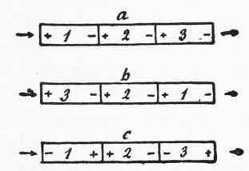

Direction Followed Upon A Scent
Description
This section is from the book "The Psychic Life Of Insects", by E. L. Bouvier. Also available from Amazon: The Psychic Life of Insects.
Direction Followed Upon A Scent
Not only do ants know how to direct themselves by scent, but they distinguish it in the sense of going and coming. Upon a scent which had served at their colony-moving, Formica pratensis went back and forth between their nest and a tree where they were caring for plant-lice. Forel says:
Several times I seized the workers which were returning from the tree to their nest, their abdomens filled with honey, and I placed them each time again upon the line of the colony-moving, but about a yard from the place whence I took them. Kecovering from their first astonishment, and after having made several short circuits, they placed themselves each time, without being deceived en route, in the right direction leading to their formicary, never the opposite.
And Forel asks how they have been able to recognize by the scent the direction which they followed. Since "ants see badly," one is led to suggest the following explanation : With their mobile antennae, in which the olfactory organs are varied and very numerous, these insects can explore by contact the odor fields following the three dimensions of space and form in their memory "a kind of chemical topography from the odors as elements of special energy." Much more, they perceive at a distance odorous emanations which increase in the air their "chemical geography of space, but in a more confused way. ' ' Thus, provided with this "topochemical sense which enables them to recognize forms and the relations of forms, they are capable of distinguishing in their odorous fields the differences which the traces of going and coming show on a scent, the right side and the left side of this, and consequently the direction which they should take. Not without embarrassment, the workers of Forel found the right way when their eyes had received an opaque varnish. With the antennae cut off, they were completely incapacitated. Odor plays a much more important part than sight in this phenomenon.
This was equally shown in the pretty experiments made in 1882 by Lubbock. The eminent biologist had habituated Lasius niger to cross a little wooden bridge to reach their provender. When they were on the bridge, he turned it 180 degrees. The travelers usually executed the inverse rotation which is known to us, but in addition-and this is the interesting fact-they did not know enough to take the scent which they found before them when they arrived at the end of the bridge. On the contrary, when three similar bridges were placed in their way they crossed without the least embarrassment the two bridges at either end when they had been transposed without rotation (Figure 15, b).
Bethe (1908) has repeated with some modifications the experiments of Lubbock upon Lasius niger. These led to the same results, and he concludes properly that ants leave directive traces on their journey, but, considering insects as automata which act simply by reflexes, he supposes that the odorous traces represent a polarization and that, by reason of the contrary polarities going and coming, they are directive, in a reflex way, on the route. When the bridges are turned at 180 degrées (Figure 15, c) the travelers lose their orientation because they find themselves in the presence of inverted polarities. But Wasmann has had no trouble in proving that this deduction lacks foundation. Ant roads are covered with traces of both kinds, and if it is true that these traces are of contrary polarities, they should reciprocally neutralize one another. Even if it is not so, the rotation of a bridge on the route could not fail to disorient them, for the travelers would always meet before them traces of perfectly usable polarities. It would be difficult to deny the justness of these criticisms ; and, moreover, Bethe has modified his hypothesis (1902) by saying that the term polarization expresses simply the idea that the odorous traces must be qualitatively or quantitatively different going and coming. This is nearly the interpretation of Wasmann, for this biologist admits that the odorous traces differ in character according as the insect is going from its nest or returning, but, as Escherich1 remarks, in spite of this agreement the two biologists differ profoundly in their manner of interpreting the orientation of our insects upon their route. "According to the reflex theory of Bethe, the different traces are nothing but physiological excitants adequate to provoke the reflex of going and coming . . . , while according to Wasmann, the ants really perceive the kind and quality of the odors. They can, according to circumstances, use or not use these perceptions, which they elaborate in new associations and preserve in the memory" to find and follow the right direction on their scent. Forel does not think differently, and the interpretation of Wasmann is nothing but the general placing together of the ideas of Forel on the topochemical sense. Assuredly this is to grant much to the ants, but it is not outside the domain of possibility and of experiment. Forel says:
Fig. 15.-Experiment of Lubbock modified by Bethe. The Lasius ants pass over three contiguous little blocks 1, 2, 3, to return (a) to their nest. When the position of the end blocks is inverted without being turned (b) the ants continue their journey as at a, but if the blocks 1 and 3 are turned at 180 degrees they refuse to proceed on them when they themselves are on 2. If block No. 2 is turned at 180 degrees when the ants are on it, they also refuse to go on to the two neighboring blocks.
Just think an instant: We have in the skin a sense giving us an exact knowledge of a thousand odors and shades of odors of all the bodies which surround us, not only when they touch us but even in the form of the most subtle emanations from a certain distance. Let us think of these hands in the shape of a rounded tube placed at the end of two long mobile whip lashes which we can move and tap with each step. Note that if the emanations of different objects . . . are mingled at a little distance, the chemical nature of the surfaces of these organs are very closely localized by limited special surfaces. ... If we were endowed with such a sense the world would be transformed for us. Odor would become a sense of forms.
1 K. Escherich, Die Ameise, 1906.
But in its antennae the ant possesses a pair of organs of this nature, and this is why Wasmann is able to range himself on the side of Forel. No one knows the habits of ants better than these eminent biologists, and no one appreciates as well the difficulties of their hypothesis, but it is not necessary to invent a new sense, for their topo-chemical sense is nothing more than a tactile odoriferous sense, and it thus remains in the experimental field.
With Wheeler, Escherich, and most of the biologists, we believe that ants orient themselves like other Hymenoptera-that is to say, by means of their senses and by associating their senses according to the case; visual orientation predominates with many exploring forms, olfactory with some others, while smell joined to touch serves them very well when they are following a scent.
Continue to:
- prev: Behavior Of Ants On Their Roads
- Table of Contents
- next: Chapter XIII. The Division Of Sexes With Nest-Making Hymenopteka